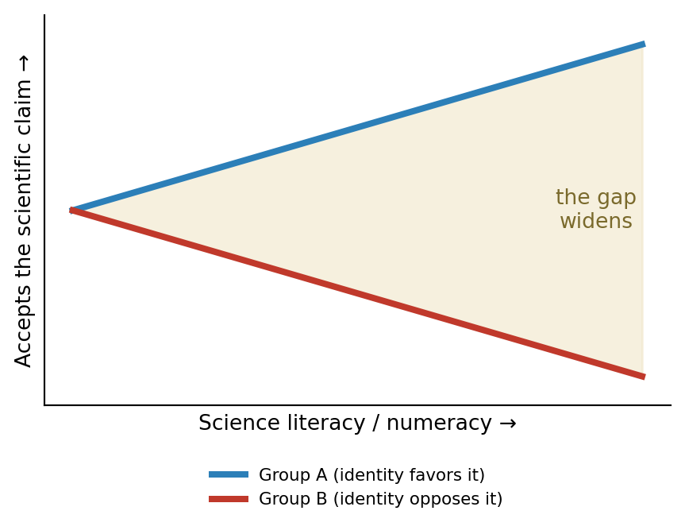

Part B: False Beliefs and the Ethics of Correction
An Introduction to Bioethics.
A mother brings her healthy 14-month-old to your clinic. She is warm, college-educated, and clearly devoted to her child — and she refuses the MMR vaccine, certain it causes autism. She has read widely. She is not stupid, and she is not careless.
You have about 15 minutes.
Note
Notice what is not her problem: a shortage of information. She has plenty — much of it false, all of it confidently held. Handing her more facts may do nothing, or may make her dig in.
That is the puzzle this lecture is about. In Part A we asked what a society may compel. Here we ask the harder question: what do you do when force is unavailable or wrong, and the obstacle is not defiance but belief?
We will not solve it by deciding she is foolish. We have to understand why a smart, caring person ends up here — and what may honestly be done about it.
Important
If giving people the facts does not fix false medical beliefs — and can entrench them — what may a clinician or a state permissibly do instead, without manipulating people or simply declaring dissent irrational?
COVID-19 is our richest example, because most of us lived it. But the target is general: how false medical beliefs form, spread, and resist correction — long before COVID, and long after.
By the end of Part B, you will be able to:
The deficit model
The intuitive theory of false belief: people believe wrong things because their heads have a deficit — missing information. Fill the gap with facts, and the false belief dissolves.
It feels obviously true. It is also, for charged health topics, mostly wrong — and the rest of this section explains why.
If the deficit model were right, the most scientifically literate people would be the least divided over contested science. The data show the opposite.
The legal scholar Dan Kahan studies what he calls identity-protective cognition: on issues that have become badges of group identity, people reason to protect their standing in their group, not to track the truth (Kahan et al. 2012).
Kahan’s striking finding: on a politically charged science question, giving people more scientific literacy and numeracy makes them more polarized, not less.
The most knowledgeable people are the best at finding reasons for whatever their group already believes. Skill becomes a better engine for motivated reasoning.
So “educate them harder” can widen the gap it was meant to close. The bottleneck is not facts. It is identity.

Important
The lesson is not “people are stupid,” and it is not “facts don’t matter.” Both misreadings lead somewhere ugly.
Knowing this changes the strategy, not the facts. It tells us why our mother in the clinic won’t budge — and warns us that the obvious move may backfire.
You have never run the experiments behind germ theory. Neither have I. Nearly all of medical knowledge reaches us through testimony — we believe it because we trust the people and institutions who tell us.
The philosopher C. Thi Nguyen draws a distinction that changes how we should respond (Nguyen 2020).
Epistemic bubble
A network that simply leaves out other voices — you just never hear the other side.
It is an omission. Bubbles are fragile: expose the person to the missing information and the bubble can pop.
Echo chamber
A network that actively discredits outside voices — they are taught to be liars, shills, “sheep.”
It is a manipulation of trust. Exposure does not pop it; it can confirm the story.
This is the part that surprises people. In an echo chamber, the usual fix — “here are the facts from the experts” — is not neutral. It is the very thing the chamber has prepared its members to reject.
Is our MMR mother in a bubble or a chamber? It matters enormously for what you should do.
| If a bubble | If an echo chamber | |
|---|---|---|
| What’s wrong | she just hasn’t seen the evidence | she’s been taught the evidence is a lie |
| What works | calm exposure to good information | exposure can backfire; trust must come first |
| Your move | inform | connect, then inform — or you confirm the story |
The same words — “actually, the studies show no link” — heal a bubble and harden a chamber.
Here the skeptic has a real point, and we should grant it plainly. You have already seen that most published findings can be false — p-hacking, the replication crisis, retracted landmark studies (Ioannidis 2005).
So if science errs, isn’t trusting “the experts” just its own kind of faith?
Important
From “science sometimes gets it wrong,” it does not follow that “so my podcast is just as likely to be right.”
That inference treats all sources as equally unreliable the moment any one of them errs. But a method that catches and corrects its own errors is in a completely different class from one that never checks itself at all.
The question is not “is science perfect?” (no) but “what makes it more trustworthy than the alternatives?”
The historian Naomi Oreskes argues that science’s authority does not rest on the brilliance of individual scientists, who are as biased as anyone (Oreskes 2019).
It rests on a social process:
Oreskes and Conway documented a darker move: you don’t need to disprove science to defeat it — you only need to manufacture doubt (Oreskes and Conway 2010).
Be careful here. Tobacco and climate had a clear paymaster — an industry funding doubt to protect a product. Vaccines do not fit so neatly: no big company profits from anti-vax, and makers actually want uptake. So who is buying the doubt?
So for vaccines, cultivated doubt is real but indirect — a spillover and a side effect, not a single boardroom’s plan. That is why it is one cause among several, not the whole story.
Put the last two sections together and a sharp line appears — the one we most need.
| Cultivated denial | Earned distrust | |
|---|---|---|
| Source | manufactured by interested actors | learned from real betrayal |
| Example | doubt-mongering about vaccines | wary of a system that has lied before |
| The right response | expose the manufacture | acknowledge the wrong, rebuild trust |
Not all distrust is irrational. Our next move is to take the reasonable kind seriously.
A person who distrusts the medical system is not always in an echo chamber. Sometimes they are reasoning correctly from a real history. In Bayesian terms, they are updating sensibly — on a corrupted set of evidence.
The defect here is not in the person’s reasoning. It is in the evidence they were given — by history, and by the sources they had reason to trust.
The betrayal isn’t only in the history books. It is re-taught in ordinary clinical encounters.
Note
This reframes the whole problem. If some distrust is earned, then “correcting” people by repeating official facts — louder — is not just ineffective. It repeats the original insult: you are the problem; we are fine.
The work isn’t only in their heads. It is in the track record — which means the cure for some false beliefs is not a better pamphlet, but a system that stops earning the distrust.
We have been collecting causes, not rival theories. A false medical belief is not explained by any one of them. It is produced by a mix — and the mix differs from person to person.
| Contributor | Where it lives | |
|---|---|---|
| 1 | Identity-protective cognition (Kahan) | inside the believer |
| 2 | Epistemic bubble (Nguyen) | the information they meet |
| 3 | Echo chamber (Nguyen) | the information they meet |
| 4 | Cultivated doubt (Oreskes) | the information they meet |
| 5 | Reasonable inference from real betrayal | inside the believer |
These are not five separate boxes. They reinforce each other, which is why the belief is so hard to move.
So we are not picking one cause. We are mapping a web — and asking which strands are strongest for this person.
This is the whole payoff. Different mixes call for different moves.
| If the belief is mostly… | then the response is… |
|---|---|
| Epistemic bubble | good information may actually work |
| Echo chamber | lead with a trusted messenger, not facts |
| Identity | don’t threaten the identity; find an in-group frame |
| Cultivated doubt | expose the merchant and the incentive |
| Reasonable inference | acknowledge the real wrong; rebuild trust |
Hand everyone the same fact sheet, and you will help the few in a bubble and harden everyone else.
Which strands are strongest? Roughly:
Lead move: not the studies. A trusted messenger and the parent’s own values — because the dominant strands punish a facts-first approach.
A different mix entirely:
Lead move: an in-group voice, not an official one — because the identity strand makes the messenger matter more than the message.
Back to the mother refusing MMR. You now suspect she is in an echo chamber where doctors are pre-cast as untrustworthy.
The same dynamic scales — from one clinic to a whole country.
Same contributors — identity, echo chambers, cultivated doubt — at the scale of a state.
Note
We need three words the lecture has been circling:
Leading with rapport and shared values can be honest persuasion or sliding manipulation — and the difference is whether you are giving her reasons she could endorse, or pulling levers she can’t see. Hold that line; the rest of the lecture tests it.
Recall what makes a choice genuinely autonomous: not just that it is uncoerced, but that it is informed — made with real understanding.
Important
The moment you may override a choice because its belief is wrong, you need a judge of which beliefs count as wrong enough. That judge is usually you — and that is paternalism’s foot in the door.
Recall the limit from earlier: power over a competent adult needs more than “they believe something false.” Plenty of competent people believe false things and keep the right to decide. The harm-to-others case (an unvaccinated child in a community) is far stronger than the “for-her-own-good” case — and they should not be blurred.
As with coercion in Part A, responses to false belief form a ladder — and each rung costs more in autonomy. Climb only as high as the case warrants.
| Rung | Tool | Autonomy cost |
|---|---|---|
| 1 | Inform — offer good evidence | none — pure persuasion |
| 2 | Trusted messenger — route it through an in-group voice | low |
| 3 | Reframe / nudge — defaults, framing, choice architecture | contested — may bypass reason |
| 4 | Restrict — limit reach of false claims (platform rules) | real — speech costs |
| 5 | Mandate — attach consequences to the behavior | highest — Part A territory |
Rungs 1–2 give reasons. Somewhere around rung 3, we start managing people instead of convincing them.
The classic answer to bad speech is more speech: let truth and falsehood grapple, and truth wins. It is the case for staying on the low rungs.
But that bet assumed people hear the other side. Nguyen’s echo chamber is precisely the case where exposure doesn’t correct — where the marketplace may not clear. That is the strongest argument for climbing higher — and its danger.
The marketplace of ideas
Mill’s wager: open debate is self-correcting, so the cure for error is argument, not suppression. The echo chamber is the modern stress test of whether that still holds.
The clinic dilemma becomes a constitutional one when the actor is the government.
Important
Climbing to rung 4 or 5 against false belief carries a built-in trap: suppression can confirm the story.
The echo chamber teaches that authorities silence the truth. Deplatforming, penalties, and gag rules can all be re-read as proof of exactly that — turning the correction into recruitment material.
This doesn’t make regulation always wrong. It means coercion against belief can be self-undermining in a way coercion against behavior (Part A) often is not.
The triage from Part A returns, now aimed at public-health messaging.
| Unreasonable | Why it fails | Legitimate | Why it’s serious |
|---|---|---|---|
| “They lied, so trust no one” | over-generalizes from real errors | “They overstated certainty and lost credibility” | a real failure of candor |
| “Misinformation is anything I dislike” | makes the censor the judge | “Who defines misinformation, and with what limits?” | a genuine free-speech worry |
A social platform asks you to write its policy on COVID vaccine claims.
Pull the threads together. If facts backfire in echo chambers, if some distrust is earned, and if coercing belief can confirm the conspiracy — then the center of gravity shifts.
Important
The aim is not to engineer the right beliefs in people’s heads. It is to become, as a clinician and as an institution, worth believing — so that your testimony is accepted rather than rejected.
Oreskes’ point, turned practical: trust is earned by a process, not demanded by authority.
Becoming trustworthy is concrete work, not a slogan.
So what do you say to the mother?
We started with a smart, caring mother whom facts would not move, and asked why. The deficit model is false: a false medical belief is produced by a mix of five contributors — identity-protective cognition (Kahan), epistemic bubbles and echo chambers (Nguyen), cultivated doubt (Oreskes, reaching vaccines only indirectly), and reasonable inference from a real history of betrayal. They feed each other, and the mix differs by person — so the same fact sheet that helps someone in a bubble hardens everyone else. The ethics then turns on autonomy: we cannot simply override beliefs we judge false without becoming paternalists, and coercing belief can be self-undermining. The honest path is not to engineer belief but to become worth believing — through transparency, candor about uncertainty, and repair.
Recall
Explain the difference between an epistemic bubble and an echo chamber, and why it changes how you should respond.
Apply
A patient refuses a cancer treatment in favor of an unproven herbal remedy he found online. Name which of the five contributors look strongest in his case, and say what you would do first.
Debate
Should a government be allowed to remove medical misinformation from social media? Defend your view using the suppression paradox and at least one benchmark from Part A.
Bioethics OER · CC BY-NC 4.0 · Brendan Shea